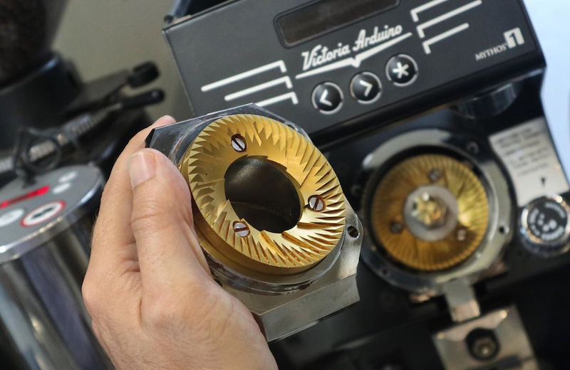

Our trained, certified technicians are ready to keep your machines running at peak performance. We understand that every minute of downtime directly affects your revenue and your customers' experience.

From initial installation to regular preventive maintenance — our team keeps your machines performing throughout their working life.
Installation is carried out by certified technicians to manufacturer standards, covering machine set-up, grinder calibration and full operational testing before handover to you.
A preventive maintenance programme to keep extraction consistent and extend machine life. Temperature, pressure and dose are calibrated to the manufacturer's official standards.
Official manufacturer warranty, backed by genuine manufacturer spare parts, so your machine is repaired with the right components.
Our customer service team takes fault reports by phone, WhatsApp and email, offering troubleshooting guidance by phone or video call for a quick fix without having to wait for a technician visit.
Structured training programmes for operators and baristas — from basic operation and latte art technique to menu development for specialty cafés — tailored to your needs.
As your business grows, our team can advise on increasing machine capacity or expanding to new locations — including needs analysis and investment projections.
Machines and equipment are a major investment in your business — and like any investment, they deserve the best protection.
Our Maintenance Agreement (PMA) keeps your machines in optimal condition at all times, with an annual contract that gives you long-term peace of mind.
Because we know — every hour without your machine is a real loss for your business.
A certified technician visits on a regular schedule for inspection, calibration and thorough cleaning.
Every fault report from PMA customers is prioritised, and our team will respond as quickly as possible.
If the problem cannot be resolved on site, we will work with you on a replacement machine arrangement to keep your operations running.
Beyond machines and ingredients, we bring expertise in designing beverage menus that suit your concept, target market and profitability — from ideation to standardised recipe implementation.
Analysis of your brand concept, target market and competitive positioning — followed by signature beverage recipe formulation with SOPs and precise measurements, ready for your team to implement.
Cost of goods sold (COGS), margin calculation and a sound pricing strategy for every menu item.
Seasonal menu development to keep customers engaged all year round.
Team training so every drink is served at consistent quality in every outlet.
Toffin provides comprehensive after-sales service, including installation by certified technicians, machine calibration, preventive servicing through our Preventive Maintenance Agreement (PMA), genuine spare-part replacement, warranty claims, on-site technical support, and barista and menu-development training. These services are delivered by trained, certified technicians from our Islamabad office for businesses across Pakistan.
Toffin's support services focus on products purchased through Toffin's official network, so that service quality, the availability of genuine spare parts and the manufacturer's warranty can be fully guaranteed. For machines from brands Toffin does not distribute, we can offer advice and refer you to a suitable technician.
All equipment purchased through Toffin is installed by certified technicians to ensure the machine operates optimally and to the manufacturer's standards. Installation covers fitting, initial set-up, calibration and basic operating guidance for your team.
Our technical team will respond to every reported issue as quickly as possible and arrange a technician visit where needed. PMA customers receive priority response.
For machines still under warranty, technician visits incur no additional charge. For machines out of warranty, a call-out and diagnostic fee applies, which will be confirmed before the technician arrives. PMA customers are not charged a call-out fee.
Yes. Toffin Pakistan supplies genuine manufacturer spare parts for the brands we distribute. Contact our team with your machine model and we will confirm availability.
Every machine and piece of equipment purchased through Toffin Pakistan is covered by the official manufacturer warranty. Please contact our team to confirm service coverage for your city, and we will arrange a technician for your warranty visit.
To make a warranty claim, contact Toffin's support team on WhatsApp at +92 309 1115951, including your proof of purchase and unit details (machine model and the issue). The team will verify warranty coverage and schedule an inspection or service by a technician. Claims apply to products purchased through Toffin's official network.
The Preventive Maintenance Agreement (PMA) is a scheduled, regular maintenance programme for your coffee equipment. Benefits include routine preventive servicing, calibration, faster priority response when issues arise, longer machine life and minimal operational downtime — so your drink quality stays consistent.
To sign up for a PMA, contact the Toffin team on WhatsApp at +92 309 1115951 or email toffinpakistan@gmail.com. The team will tailor the package to the number and type of machines you have, then set up a regular service schedule. Contact us to confirm PMA availability for your city.
After installation, Toffin technicians provide basic operating and maintenance guidance so your team can use the equipment correctly and safely. For further needs, Toffin also offers barista training and menu development programmes with our beverage specialists.
If your equipment develops a fault, stop using the unit and report it to Toffin's support team on WhatsApp at +92 309 1115951 or by email at toffinpakistan@gmail.com, including the machine model and a description of the problem. Our team will respond as quickly as possible. Please avoid attempting repairs yourself so that your warranty remains valid.
Call our service hotline or submit a support ticket online.